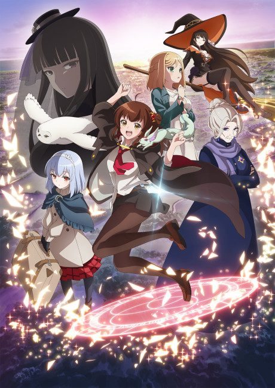
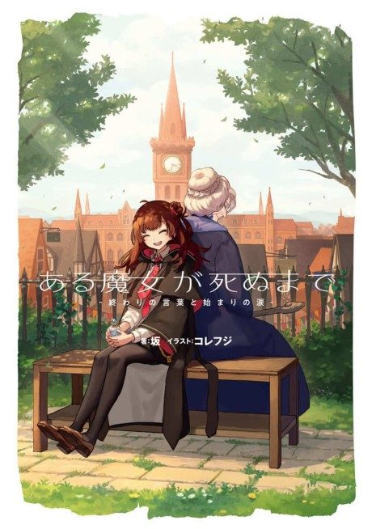

Anime
Light novel2025 · Adventure, Drama, Fantasy
Once Upon a Witch's Death
ある魔女が死ぬまで
AniList7.1
Animeter—
Episodes12 ep
SourceUnclear
Anime finished. Where does the story go next?
StatusNo source yet
We looked for where the anime ends in the light novel but found no source we trust yet. The light novel is 4 volumes, finished.